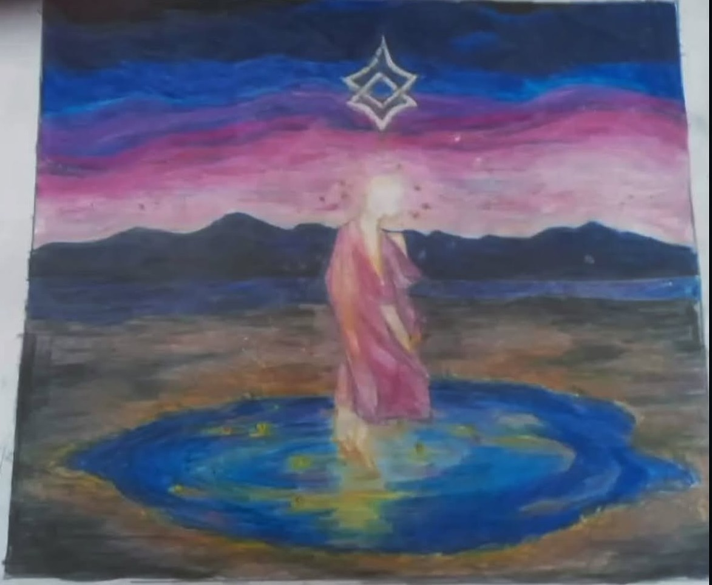
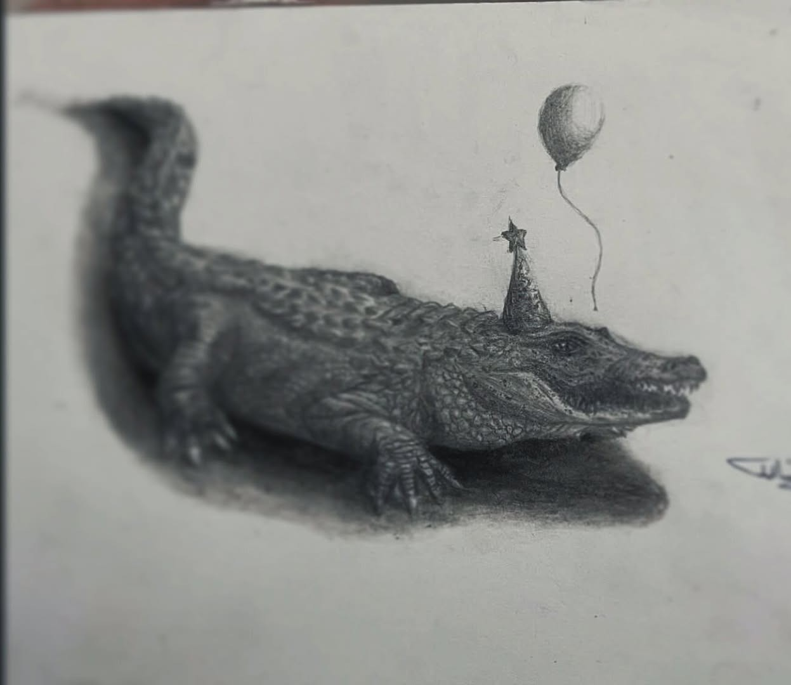
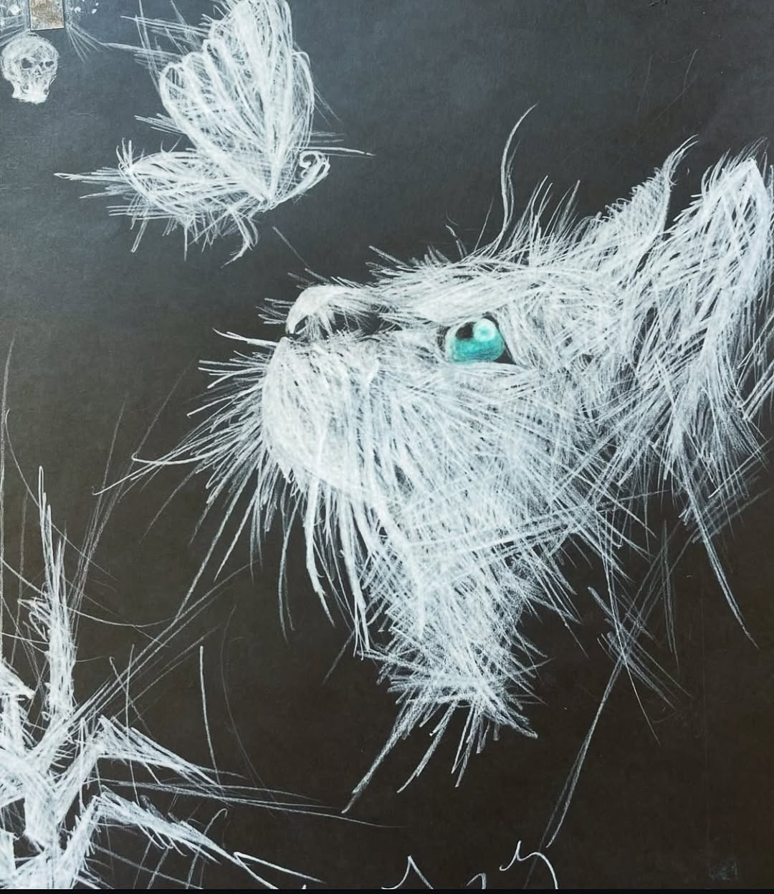
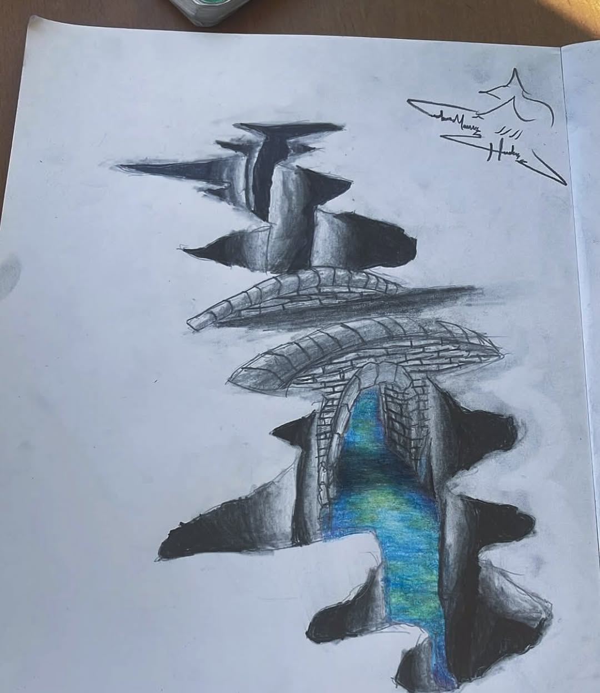
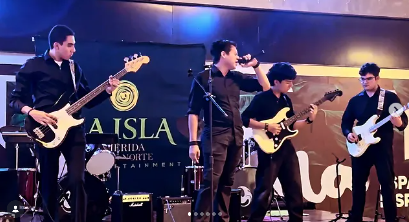
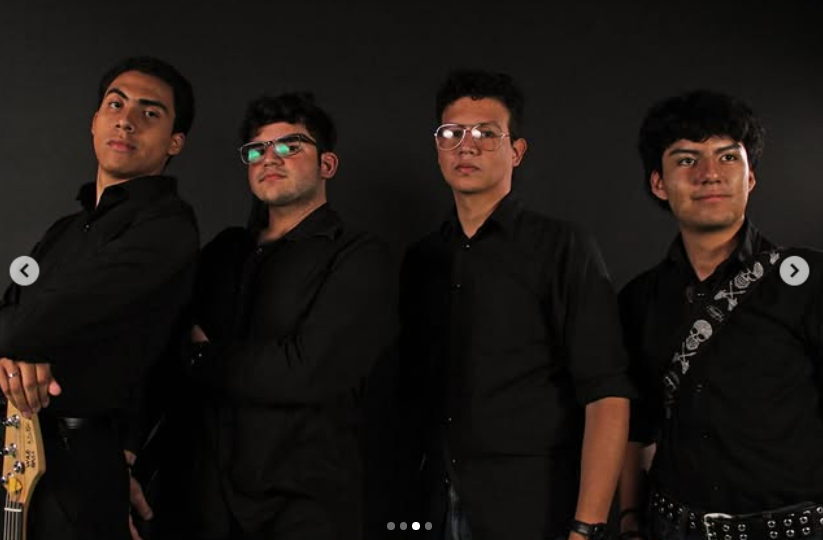
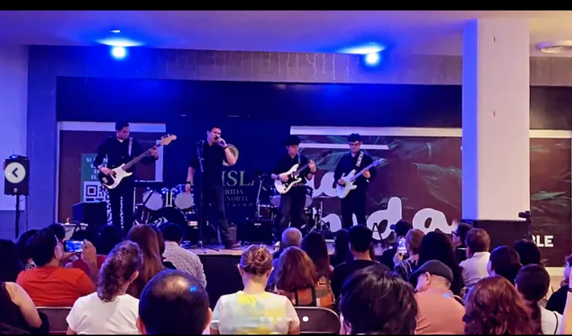
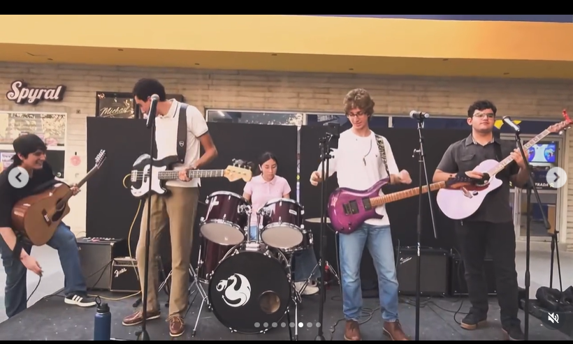

Visual Expression
Drawing Gallery
A gallery focused on traditional drawings, sketchbook studies, emotional illustrations, and artistic visual expression.




Creative Portfolio
Creative Student • Musician • Writer • Future Psychology Student
Welcome to my personal and professional webpage. This site represents my academic growth, artistic identity, and personal values through music, writing, psychology, and creative expression. I am passionate about understanding people, creating meaningful art, and constantly improving myself through new experiences and challenges.
"Growth is not about avoiding mistakes, but about confronting them, adapting, and moving forward with greater awareness."
Music • Psychology • Storytelling
Professional Background
Creative and ambitious student with strong interests in music, literature, psychology, visual arts, and technology. Passionate about artistic expression, storytelling, and personal growth. Experienced in developing academic and creative projects, public presentations, and collaborative work environments. Recognized for adaptability, emotional intelligence, creativity, and strong attention to detail.
High School Student
Currently pursuing secondary/high school education.
Reflection & Growth
I had always believed that if you practice long enough, a performance, or anything you want to do, would go exactly as planned. Weeks of practice, I thought, could protect you from almost anything. That illusion shattered when in the Mother’s Day Festival in high school, our play fell apart before we had even begun.
Alex, J’ and I had spent weeks practicing the piece, getting every transition and dynamic right. She was always an emotionally difficult girl, but I was barely getting to know her. I still didn't measure the impact it could have on my life. Our presentation of course mattered, but what happened just a few minutes away from the presentation, was where I took the first step to realize the emotional weight it would generate.
That mere day, the atmosphere was heavier than usual. She froze; in the worst time she could. Her mind went blank on sections we had played perfectly in rehearsal, and her breathing turned uneven. Time felt like a countdown to catastrophe. I stood there torn between focusing on the music and trying to calm her down.
First half went by in tense autopilot. Then, right in the middle of the most delicate section, my guitar suddenly cut out. The cable had a false contact, and I tried to move it right as fast as I could, but the damage was done. The flow between us broke completely.
In the next days, I kept replaying those moments. I had poured so much energy into supporting her that I hadn’t noticed how drained I was becoming. I used to think I had enough energy to help others without limits. That day showed me how dangerous that idea can be.
I started to understand that empathy isn’t about losing yourself in someone else’s struggles. It requires balance, self-awareness, and the courage to recognize your limits. I began reconnecting with music not as a duty, but as something that could ground me again.
Looking back, that imperfect performance changed how I see relationships and my own boundaries. It taught me to communicate more openly instead of assuming I knew what was best. These lessons are why I want to study psychology.
For more than a year, I was supporting her. But unfortunately, I left myself aside all that time. Now that she left me that lesson, I could realize that I wanted to support people in a more professional way.
This experience reflects the kind of student I strive to be: someone who does not collapse under pressure, but learns, adjusts, and moves forward with greater awareness. These are qualities I will bring into a rigorous and demanding academic environment.
Projects & Experience
Literary and symbolic storytelling project focused on emotional depth, atmosphere, and introspection.
Guitar performance, arrangements, and musical experimentation inspired by cinematic and emotional composition.
Multimedia and collaborative projects involving literature, history, and artistic analysis.
Exploration of emotion, psychology, and narrative through visual and written artistic expression.
Social & Creative Presence
A collection of artistic, personal, and creative publications shared through my social media presence and visual projects.

Live performance at a concert stage, capturing the band’s energy, stage lighting, and dynamic onstage presence.

Band portrait shot in black attire, showcasing the group’s unified aesthetic and moody creative identity.

Outdoor live session with the full band and drummer, conveying the energy of a public performance.

Live band showcase from a public event, highlighting stage arrangement and the group’s collective sound.
Visual Expression
A gallery focused on traditional drawings, sketchbook studies, emotional illustrations, and artistic visual expression.




Identity & Vision
Emotional artistic expression through sound, writing, and atmosphere.
Interest in emotions, human behavior, introspection, and personal growth.
Passion for sketching, aesthetics, cinematic imagery, and artistic composition.
Future Presentation
This section will feature my future admissions presentation video, showcasing my academic goals, artistic background, and personal motivations.